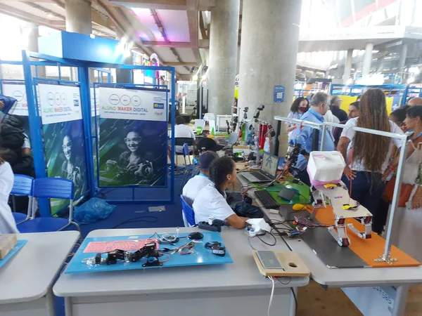
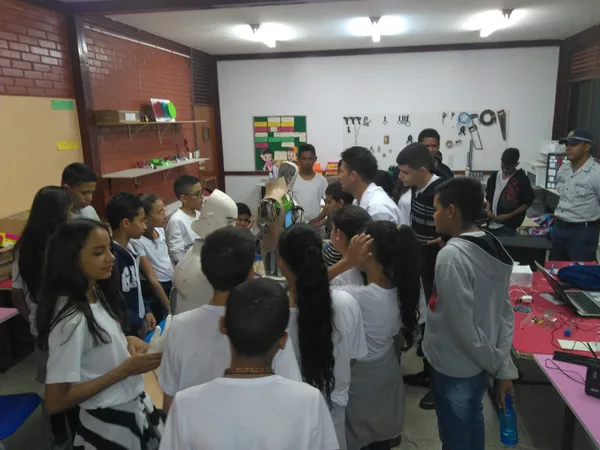
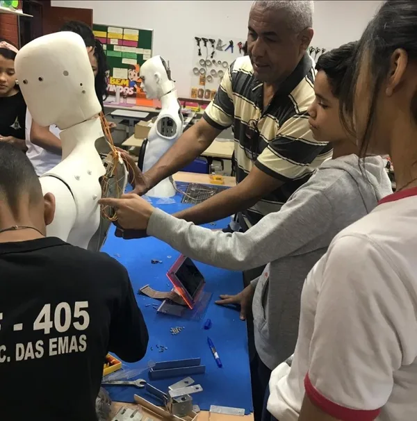
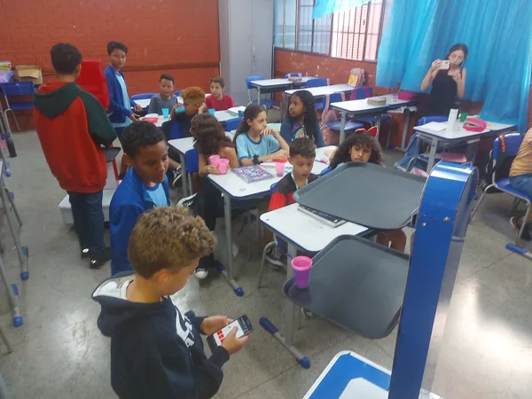
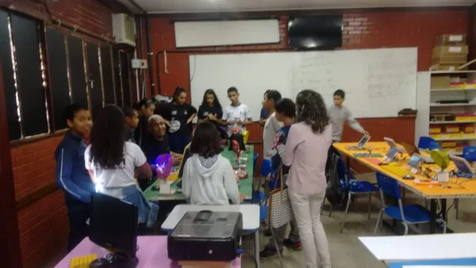

CEF 101
Recanto das EmasA escola onde tudo começou. Desde 2018, o CEF 101 é a casa do Aluno Maker Digital, palco dos primeiros robôs e das primeiras conquistas dos alunos do projeto.
Desde 2018
Anos Finais e Ensino Médio
Onde atuamos
Desde 2018, o Aluno Maker Digital atende escolas públicas do Recanto das Emas e Brasília — levando robótica, programação e inovação diretamente às salas de aula e laboratórios.
Nossas parceiras
O AMD atende alunos do 1º ano do Ensino Fundamental ao 3º ano do Ensino Médio em cada uma dessas escolas.
A escola onde tudo começou. Desde 2018, o CEF 101 é a casa do Aluno Maker Digital, palco dos primeiros robôs e das primeiras conquistas dos alunos do projeto.

Escola parceira que abre suas portas para o AMD levar robótica educacional aos seus alunos, com oficinas que misturam eletrônica, programação e criatividade.
Parceira do AMD com turmas que participam de oficinas de eletrônica e introdução à programação com Arduino — abrindo caminhos para que cada aluno descubra seu potencial criativo.

No CEF 308, os alunos aprendem desde a montagem de circuitos básicos até a programação de microcontroladores, com projetos que fazem sentido para o cotidiano deles.

Uma das escolas com maior engajamento dos alunos. No CEF 405, oficinas de robótica e programação criaram verdadeiros apaixonados por tecnologia.
Centro de Ensino Médio 804 — parceiro do AMD no atendimento a jovens do Ensino Médio que buscam um diferencial tecnológico para o futuro acadêmico e profissional.

Escola Classe 203 — onde os menores do projeto encontram seu primeiro contato com robótica. Crianças de 7 a 12 anos descobrem que também podem ser criadores de tecnologia.

Escola Classe 401 — parceira no atendimento às crianças dos anos iniciais, onde a robótica é usada como ferramenta lúdica e educativa para despertar a curiosidade científica desde cedo.
Centro de Educação Infantil Pinheirinho Roxo — parceiro do AMD no atendimento às crianças da primeira infância, onde a robótica lúdica desperta a curiosidade científica desde os primeiros anos de vida.
Centro Educacional 104 — escola parceira do AMD com turmas do Ensino Médio que participam das oficinas de robótica e programação.
Centro de Ensino Fundamental 306 — o AMD atende a turma de inclusão de alunos surdos e mudos com metodologia adaptada, comunicação visual e projetos que ampliam a autonomia de cada aluno.
O AMD levou seus projetos ao Colégio Militar de Brasília em evento especial, demonstrando o alcance e a qualidade técnica dos projetos construídos por alunos de escolas públicas do Recanto das Emas.